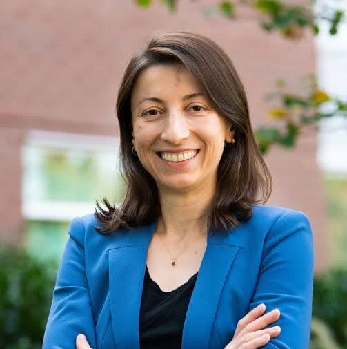
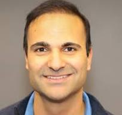

AI for Urban Transportation
AI-Enabled Traffic Signal Control and V2I Integration for Scalable, Trustworthy Deployment
DATE
December 14, 2026
TIME
2:00 PM – 5:30 PM
LOCATION
Honolulu 3
About the Workshop
Traffic signal control optimization is increasingly critical as growing vehicle volumes, mixed fleet compositions, and constrained road infrastructure strain urban mobility networks across the United States. Next-generation AI-enabled traffic monitoring and control—integrated with Vehicle-to-Infrastructure (V2I) communication—offers transformative potential to reduce congestion, lower transportation costs, and increase regional economic productivity.
Recent advances in Connected Automated Vehicle (CAV) and V2I technologies have accelerated development of AI-based traffic signal control systems capable of real-time adaptation and network-level coordination. Recent demonstrations have achieved up to 30% travel time reduction during peak traffic hours, highlighting the significant societal and economic benefits of these technologies. However, transitioning from research demonstrations to operational deployment requires addressing safety, integration, human oversight, and validation across varying CAV penetration rates.
This workshop brings together experts from academia, national laboratories, and industry to examine the state of the art in AI-based traffic signal control and chart a path toward safe, scalable, real-world deployment.
Workshop Topics
- AI algorithms for adaptive signal control and corridor-level optimization
- CAV/V2I integration enabling bidirectional vehicle-infrastructure coordination
- Simulation, hardware-in-the-loop, and field validation of AI-based traffic control
- Scalability and transferability across diverse urban environments
Invited Speakers

Jingtao Ma
Miovision
Jingtao Ma is Director of Engineering – V2X with Miovision. He was a founding member and the Chief Technology Officer at Traffic Technology Services, Inc, now acquired by Miovision. Dr. Ma has overseen the TTS technological development from inception to full-fledged commercial service. Its flagship product, Personal Signal Assistant® , now powers Connected Vehicle applications such as Audi and Mercedes-Benz Traffic Light Information, and Ford V2I LITE in China. The system is adapted and deployed at over 75,000 signalized intersections in nine countries in North America, Europe and Asia Pacific. Dr. Ma is co-inventor of 9 awarded US patents and other proprietary information. He has authored over 60 publications including peer reviewed journal papers, conference proceedings, research reports. Dr. Ma got his PhD from University of California at Davis; he is also a registered Professional Engineer in the State of Washington.

Geline Canayon
Aimsun
Geline Canayon is Vice President, Project Delivery - North America at Aimsun. She holds a Bachelors degree in Civil Engineering from New York University.
Guohui Zhang
University of Hawaiʻi at Mānoa
Guohui Zhang is a Professor of Civil and Environmental Engineering at the University of Hawaiʻi at Mānoa. He specializes in traffic engineering, intelligent transportation systems (ITS), and large-scale transportation modeling. Before joining UH Mānoa in 2016, he served as an Assistant Professor at the University of New Mexico (2011–2016) and a Research Associate at the University of Texas at Austin. He earned his Ph.D. in Civil Engineering from the University of Washington in 2008.
Roshan Kini
Pacific Northwest National Laboratory
Roshan Kini is a research engineer specializing in power electronics at Pacific Northwest National Laboratory (PNNL). He earned his B.E. and M.E. degrees in electronics and telecommunication engineering from Mumbai University, India, in 2010 and 2014, respectively. In 2019, he obtained his Ph.D. in engineering from the University of Toledo, Ohio, USA. He serves as the Publication Chair and the Session Chair for IEEE NAECON Conference. He has been recognized for his outstanding performance with two Energy and Environment Directorate Outstanding Performance Awards at PNNL.

Draguna Vrabie
Pacific Northwest National Laboratory
Dr. Draguna Vrabie serves as interim Director of the Advanced Computing, Mathematics, and Data Division at Pacific Northwest National Laboratory (PNNL). Her research bridges control theory, artificial intelligence, and scientific machine learning, advancing adaptive decision-making for high-performance cyber-physical systems where computational intelligence (software, algorithms, AI) operates in real time alongside physical processes (mechanical, electrical, thermal, etc.) to achieve precise, efficient, and reliable performance under dynamic conditions. She has made significant contributions to the theory of reinforcement learning, optimal control, and adaptive dynamic programming, with applications in robotics, energy systems, secure control, and autonomous systems. Before joining PNNL, she was a Senior Scientist at United Technologies Research Center in the Control Systems Group, contributing to various commercial and aerospace applications, including energy-efficient buildings, power electronics, jet engine fleet maintenance, and mission planning for unmanned aircraft. She holds a Ph.D. in Electrical Engineering from the University of Texas at Arlington.

Andreas Malikopoulos
Cornell University
Andreas Malikopoulos is a Professor in the School of Civil & Environmental Engineering and the Director of the Information and Decision Science Lab at Cornell University. He also holds courtesy appointments with the Cornell Robotics program, Applied Mathematics, Systems Engineering program, Electrical and Computer Engineering, and Mechanical Engineering. Prior to these appointments, he was the Terri Connor Kelly and John Kelly Career Development Professor in the Department of Mechanical Engineering (2017-2023) and the founding Director of the Sociotechnical Systems Center (2019-2023) at the University of Delaware (UD). Before he joined UD, he was the Alvin M. Weinberg Fellow (2010-2017) in the Energy & Transportation Science Division at Oak Ridge National Laboratory (ORNL), the Deputy Director of the Urban Dynamics Institute (2014-2017) at ORNL, and a Senior Researcher in General Motors Global Research & Development (2008-2010). He received a Diploma from the National Technical University of Athens, Greece, and his M.S. and Ph.D. degrees from the University of Michigan, Ann Arbor, in 2004 and 2008, respectively, all in Mechanical Engineering. His research interests are grounded at the intersection of learning and control to enable systems—whether vehicles, robots, or large-scale infrastructures—to operate autonomously and achieve near-optimal performance while safely adapting to and interacting with dynamic environments. His work integrates decision-theoretic foundations with learning-based methods to endow engineered systems with the capability to reason, learn, and act in real time. Dr. Malikopoulos is the recipient of several prizes and awards, including the 2007 Dare to Dream Opportunity Grant from the University of Michigan Ross School of Business, the 2007 University of Michigan Teaching Fellow, the 2010 Alvin M. Weinberg Fellowship, the 2019 IEEE Intelligent Transportation Systems Young Researcher Award, and the 2020 UD’s College of Engineering Outstanding Junior Faculty Award. He has been selected by the National Academy of Engineering to participate in the 2010 German-American Frontiers of Engineering (FOE) Symposium and organize a session on transportation at the 2016 European-American FOE Symposium. He has also been selected as a 2012 Kavli Frontiers of Science Scholar by the National Academy of Sciences. Dr. Malikopoulos is an Associate Editor of Automatica and IEEE Transactions on Automatic Control, and a Senior Editor of IEEE Transactions on Intelligent Transportation Systems. He is a Senior Member of the IEEE, a Fellow of the ASME, and a member of the Board of Governors and a Distinguished Lecturer of the IEEE Intelligent Transportation Systems Society.
Schedule
AI and Urban Transportation Digital Twins
Geline Canayon, Aimsun
Aimsun began as a developer of advanced transportation modeling software and has since evolved into both a software provider and SaaS solutions integrator. Today, Aimsun delivers end-to-end mobility intelligence solutions that combine its core traffic modeling engine with real-time data integration and AI-driven analytics to create full traffic digital twins—enabling real-time prediction, automated incident detection, decision-support tools, and hardware/software-in- the-loop testing for DOTs and city agencies.
Coupling Urban Traffic Signal Control with Connected Vehicle Applications
Jingtao Ma, Miovision
Miovision, via its acquisition of Opticom, has led multi-modal traffic signal control for over half a century, providing Emergency Vehicle Preemption (EVP) and Transit Signal Priority (TSP) solutions globally. Building on this legacy, Miovision uses AI-based video sensing at the edge for traffic volume detection, feeding digital twin development and predictive traffic signal analytics that influence vehicle automation and driver behavior. New use cases—including freight signal priority, dilemma zone warning, and Vulnerable Road User (VRU) protection—aim to improve traffic flow, energy efficiency, and safety together.
Multi-Agent Reinforcement Learning for Corridor-Level Traffic Signal Control
Roshan Kini, Pacific Northwest National Laboratory
This talk presents a multi-agent reinforcement learning (MARL) approach for signal coordination across heterogeneous multi-intersection corridors, evaluated within a novel hardware-in-the-loop (HiL) framework against actuated control as baseline. The framework integrates a real-world traffic controller with a digital twin calibrated using traffic data from Coral Gables, Florida. Results show more than 30% reduction in travel delay compared to actuated control during peak periods.
Learning and Control for Connected and Automated Vehicles
Andreas Malikopoulos, Cornell University
At the frontier of autonomy lies a fundamental question: how can we design teams of agents that reason, act, learn, and memorize cooperatively in dynamic, uncertain environments? In this talk, I will present a unified perspective that integrates learning and control as the foundational principles for building such autonomous teams. In the first half of the talk, I will discuss how my group has advanced the ability of engineered systems to reason and act optimally under uncertainty, and to learn adaptively from interactions with their environment. I will illustrate these ideas through transportation-related applications, including self-learning powertrain control, power management of hybrid electric vehicles, and optimal coordination of connected and automated vehicles. These examples highlight how data-driven control and reinforcement learning can enable autonomous systems to operate safely and efficiently in real time while achieving near-optimal performance. The second half of the talk will focus on the next frontier—building autonomous teams. I will present a theoretical framework grounded in team theory, a mathematical formalism for decentralized stochastic control problems in which multiple agents with asymmetric information cooperate toward a shared objective. I will discuss recent structural results for sequential dynamic team problems with nonclassical information structures, showing how to construct information states that remain invariant to control strategies, thereby enabling dynamic programming decompositions in decentralized settings. These results can aim toward a unifying scientific foundation—what I refer to as the Science of Autonomous Team Intelligence—where teams of agents, whether robotic, vehicular, or human–machine, can reason, act, learn, and memorize collectively, achieving coherent and safe behavior in complex, uncertain environments.
Session Organizers
Sonja Glavaski
Pacific Northwest National Laboratory
Sonja Glavaski serves as a Strategic Advisor for the Energy and Environment Directorate at Pacific Northwest National Laboratory (PNNL). In this role she has developed AI Strategy for Energy Systems and is leading several strategic efforts to develop data-driven methodologies for control and automation of critical infrastructure, power generation, and urban transportation. Recently, she has been appointed to PNNL’s Technical Advisory Group overseeing Foundational Autonomy Initiative. At the same time, Dr. Glavaski is Director of Advanced Research Projects Agency-Energy (ARPA-E) Sector at PNNL, managing a portfolio of multi-disciplinary projects developing high-risk, high-reward energy technologies. During her career in industry and government, Dr. Glavaski has made significant contributions to scientific advancements in the fields of data science and control systems for multiple application areas, including energy systems, as well as vehicle and aircraft systems. She holds a Ph.D. in Electrical Engineering from the California Institute of Technology. Dr. Glavaski is an IEEE Fellow and serves on various scientific advisory and review committees.

Nawaf Nazir
Pacific Northwest National Laboratory
Nawaf Nazir is a staff research scientist in the Optimization and control group (OCG) at Pacific Northwest National Laboratory (PNNL). His work is at the intersection of optimization, control systems and machine learning with applications to energy systems, transportation systems and cyber-physical systems. He is the Principal Investigator (PI) of several Department of Energy (DOE) and ARPA-E projects related to coupled energy and transportation systems, in which he manages a diverse team of researchers at PNNL in addition to collaborating with academia, national labs and industry. He has spearheaded and chaired several workshops and panels at venues such as TRB, PES Grid-edge conference, ACC, INFORMS and PES GM. He is a Senior Member of IEEE, a member of the IEEE Transportation Electrification Council, and a member of the Transportation Energy committee of TRB. He was the recipient of the 2023 PNNL Early career research award. Dr. Nazir holds a M.S. in Electrical Engineering from Virginia Tech and a Ph.D. in Electrical Engineering from the University of Vermont.